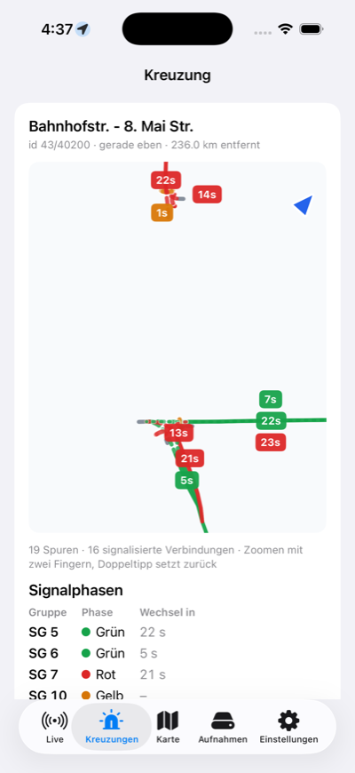

In drei Schritten loslegen
Du brauchst einmal einen Computer mit Chrome oder Edge und ein USB‑C-Datenkabel. Danach reicht das iPhone.
-
1
Firmware auf den ESP32‑C5 spielen
Steck den ESP per USB an den Computer und klick auf den Knopf. Wähle im Fenster den Eintrag mit „USB JTAG/serial debug unit“ und bestätige die Installation. Das dauert etwa eine Minute.
Firmware CITS-to-go v2.42.3 für den Seeed Studio XIAO ESP32‑C5. Wird kein Gerät angezeigt: BOOT-Taste gedrückt halten, einstecken, loslassen, erneut versuchen.
-
2
App aufs iPhone holen
Die iOS-App ist in der Testphase und wird über Apples TestFlight verteilt. Öffne die Einladung auf dem iPhone, installiere TestFlight und darüber CITS-to-go.
Noch keine Einladung? Schreib an mail@dirkreich.com. Öffne die App danach einmal und erlaube Bluetooth.
-
3
iPhone mit dem ESP koppeln
Damit sich nicht jedes Handy in der Nähe mit deinem Empfänger verbinden kann, nimmt der ESP ein neues iPhone nur an, wenn er am Computer hängt und du hier zustimmst. Das machst du einmal.
- Lass den ESP am Computer eingesteckt und öffne die App auf dem iPhone.
- Klick auf Kopplung erlauben und wähle wieder den ESP aus.
- Tippe in der App innerhalb von 30 Sekunden auf Verbinden und bestätige „Koppeln“.
Klappt es nicht? Dann ist evtl. noch ein anderes Programm mit dem ESP verbunden, z. B. dieses Flash-Fenster: Seite neu laden und nochmal versuchen. Wenn du den ESP neu geflasht hast, entferne ihn vorher in den iOS-Einstellungen unter Bluetooth („Dieses Gerät ignorieren“).

Was die App dir zeigt
Der ESP bleibt im Auto, am Rucksack oder auf dem Fensterbrett. Solange er Strom hat, verbindet sich dein iPhone von selbst.
- KreuzungenDie Spuren einer Ampelkreuzung, eingefärbt nach aktueller Phase, mit Countdown bis zum nächsten Wechsel und deiner Position.
- LiveJede empfangene Nachricht: CAM von Autos, DENM-Warnungen, SPATEM und MAPEM von Ampeln, mit Signalstärke und Rohdaten.
- Karte und AufnahmenWo die Sender stehen, dazu Mitschnitte als PCAP-Datei zum Öffnen in Wireshark.
- WeiterleitenAuf Wunsch an OpenTrafficMap, damit deine Empfänge auf der gemeinsamen Karte landen.
Fragen
Was Leute vor dem ersten Test meistens wissen wollen.
Welche Hardware brauche ich?
- Einen Seeed Studio XIAO ESP32‑C5. Andere ESP32‑C5-Boards sind ungetestet.
- Ein USB‑C-Kabel, das Daten überträgt. Reine Ladekabel funktionieren nicht.
- Ein iPhone mit iOS 17 oder neuer, alternativ ein Android-Handy mit der Original-App.
- Zum Einrichten einmal einen Computer mit Chrome oder Edge.
Wo empfange ich etwas?
Autos mit Car2X, vor allem neuere VW, senden überall CAM-Nachrichten, die siehst du fast sofort auf jeder größeren Straße. Ampeldaten gibt es nur an ausgestatteten Kreuzungen, zum Beispiel in Hamburg, Wien und weiteren Testfeldern. Auf der Karte von OpenTrafficMap siehst du, wo andere schon empfangen haben.
Warum muss das iPhone gekoppelt werden?
Der ESP kann auch senden. Damit niemand Fremdes ihn über Bluetooth steuert, merkt er sich genau ein Handy als Besitzer. Ein neues Handy darf nur ran, wenn jemand den ESP gerade per USB in der Hand hat. Genau das bestätigst du in Schritt 3. Ein neu gekoppeltes iPhone ersetzt das vorherige.
Werden meine Daten irgendwohin geschickt?
Nein, solange du es nicht einschaltest. In den Einstellungen der App kannst du die Weiterleitung an OpenTrafficMap aktivieren. Dann gehen die empfangenen Funkpakete dorthin, nicht aber deine eigene Position.
Der ESP taucht beim Flashen nicht auf
- Anderes Kabel probieren, viele USB‑C-Kabel laden nur.
- BOOT-Taste gedrückt halten, einstecken, loslassen und erneut auf „ESP32‑C5 flashen“ klicken.
- Programme schließen, die den Port belegen könnten, etwa die Arduino-IDE oder ein serielles Terminal.
Lieber im Terminal?
Firmware: CITS-to-go-firmware-v2.42.3.bin, dann esptool --chip esp32c5 write-flash 0x0 CITS-to-go-firmware-v2.42.3.bin. Koppeln: arm_enrollment.py aus dem iOS-Projekt mit python3 arm_enrollment.py ausführen.